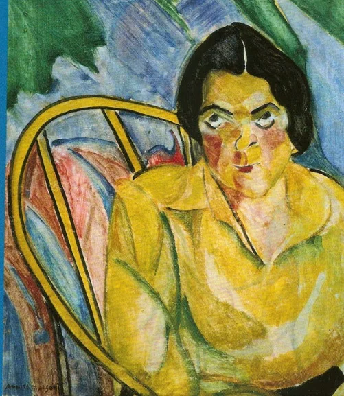
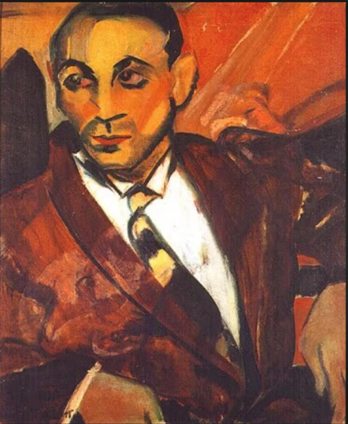
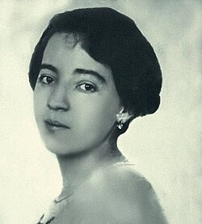
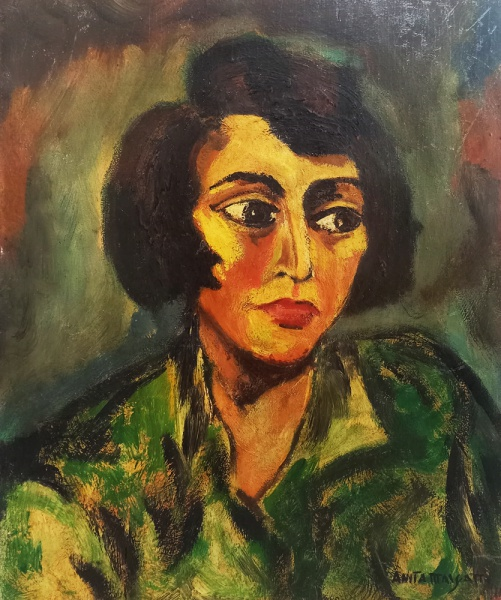

A boba
ARTISTA EM DESTAQUE
A renovação da arte brasileira
Anita Malfatti (1889–1964) foi uma pintora brasileira fundamental para o Modernismo no país. Estudou arte no Brasil, na Alemanha e nos Estados Unidos, entrando em contato com tendências modernas. Sua exposição de 1917 provocou debates importantes e ajudou a abrir caminho para a Semana de Arte Moderna de 1922.
Ver outras obras ↓
O homem amarelo
Obra em destaque
LEITURA DA OBRA
“Tropical” apresenta uma figura e elementos do cotidiano brasileiro com cores expressivas e formas simplificadas. A obra se afasta do realismo acadêmico e mostra como a artista experimentava uma linguagem moderna, ligada à sua própria visão do Brasil.
CONHEÇA QUEM CRIOU
Anita Malfatti (1889–1964) foi uma pintora brasileira fundamental para o Modernismo no país. Estudou arte no Brasil, na Alemanha e nos Estados Unidos, entrando em contato com tendências modernas. Sua exposição de 1917 provocou debates importantes e ajudou a abrir caminho para a Semana de Arte Moderna de 1922.

MAIS PARA EXPLORAR

A boba
O homem amarelo

A estudante russa